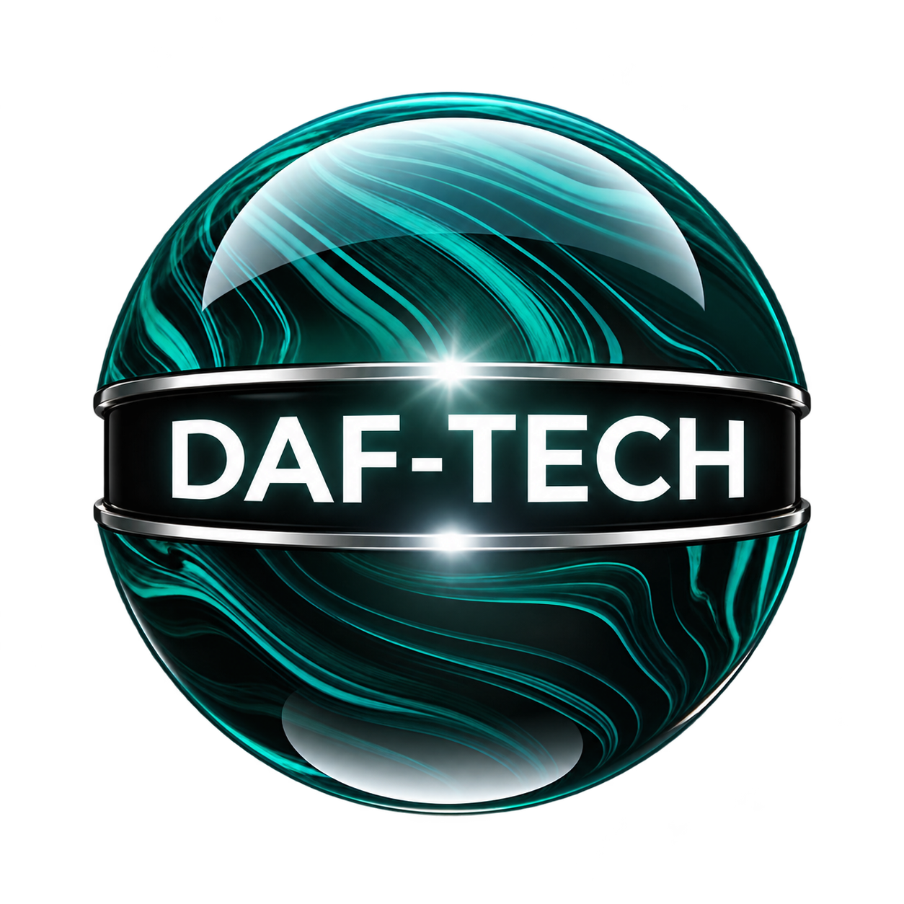

Live meeting transcript
One workspace. Three meeting platforms.
Capture the captions already displayed in Microsoft Teams, Google Meet, and Zoom Web—without adding a meeting bot.
Better CaptionKeep · Live Workspace
T
TeamsM
Google MeetZ
Zoom WebCAPTION 0042 · 10:18 AM · Jordan Lee
“The pilot needs one evidence brief everyone can verify.”
CAPTION 0043 · 10:18 AM · Morgan Chen
“Keep the source next to the decision.”
